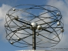
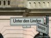

На стария сайт този албум имаше 55 снимки. Възстановени са 21 миниатюри — пълните файлове не са запазени в архива.
The old site listed 55 photographs in this album. 21 thumbnails survived; the full-size files did not.

Germans honor their great minds even when they were wrong ...The Cross everywhereIn the name of God ... we have done so many thingsA couple sitting in the middle of an empty spaceA colonade protecting artBeautiful old church on a grey sky backgroundAncient idea of beauty -- detail of a bridgeOrnamentations -- detail of a bridgeOld street lamps backed by the Deutsche bannerAncient history and dramatic cloudsWhy is this here?I kept looking at that church to the left ...

The very famous Humboldt UniversitaetA felt fear when taking this photo